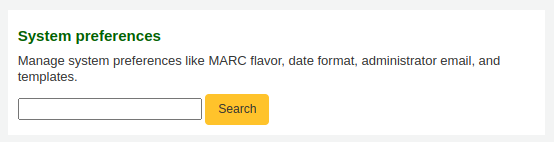
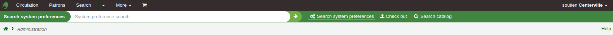
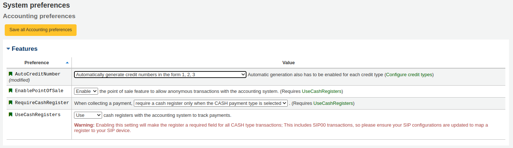
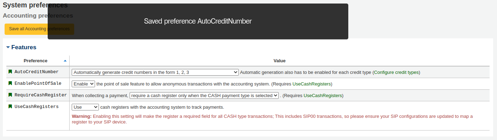
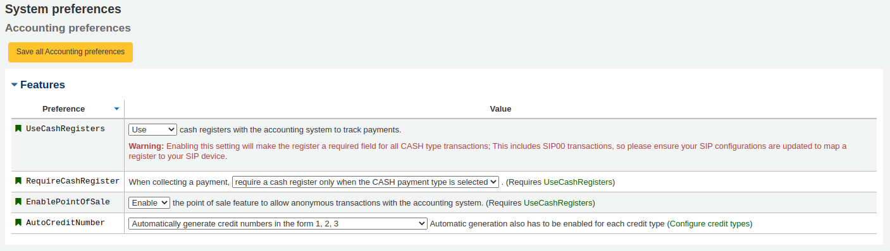

System preferences
System preferences control the way your Koha system works in general. Set these preferences before anything else in Koha.
Get there: More > Administration > System preferences
System preferences can be searched (using any part of the preference name or description) using the search box on the ‘Administration’ page

or the search box at the top of the administration module or system preferences pages.

When editing system preferences a (modified) flag will appear next to elements that were changed until you click the ‘Save all … preferences’ button.

After saving your preferences you’ll get a confirmation message telling you what preferences were saved.

Each section of system preferences is sorted alphabetically by default. Clicking the small ‘up’ arrow to the right of the word ‘Preference’ in the header column will invert the sorting.

If the system preference refers to monetary values ( maxoutstanding, for example) the currency displayed will be the default one set in the currencies and exchange rates administration section.
警告
For library systems with unique URLs for each site the system
preference can be overridden by editing your koha-http.conf file.
This has to be done by a system administrator or someone with access
to your system files. For example, if all libraries but one want to
have search terms highlighted in results, set the
OpacHighlightedWords
system preference to ‘Highlight’, then edit the koha-http.conf for the
library that wants this turned off by adding
SetEnv OVERRIDE_SYSPREF_OpacHighlightedWords "0". After
restarting the web server, that one library will no longer see
highlighted terms. Consult with your system administrator for more
information.